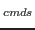

:map touche séquence |
Associe la séquence de commandes "séquence" à la touche "touche". Ainsi, dès que cette touche est appuyée, la séquence de commandes est exécutée. | |
:map |
Affiche l'ensemble des définitions effectuées, c'est-à-dire l'ensemble des "macros" de "vi" créées grâce à la commande précédente. | |
:unmap touche |
Détruit l'association entre une touche et la séquence de commandes précédemment faite. Cette commande détruit donc la macro associée à la touche "touche". | |
:ab chaine chaine |
Permet de définir une abréviation. Lorsque "chaine" est saisi, "vi" la substitue par "chaine". | |
:ab |
Affiche l'ensemble des abréviations définies. | |
:una chaine |
Détruit l'abréviation "chaine". | |
La commande ":map" permer de définir des séquences de commandes ou "macros" "vi". En effet, par définition, une macro, comme en langage C ou n'importe quel logiciel, est une série de commandes ou d'actions de base regroupées sous un nom et appelable par l'utilisateur.
Si l'option "timeout" est positionnée (cf. section
![[*]](crossref.png) ), toute exécution de macros ne peut dépasser une
seconde. Par conséquent, si vous utilisez des macros importantes,
désactivez cette option.
), toute exécution de macros ne peut dépasser une
seconde. Par conséquent, si vous utilisez des macros importantes,
désactivez cette option.
Sachant que les commandes "vi" utilisent des caractères de
contrôle en mode commande, il est possible de les insérer dans la
définition des macros grâce à la séquence
 -
- (cf. section
). De même, le caractère """ est utilisé
dans les commandes "vi" (cf. sections
et ). Par conséquent, s'il doit être utilisé
dans une macro dans un autre cadre que celui d'une commande le référençant,
il doit être précédé du caractère "
(cf. section
). De même, le caractère """ est utilisé
dans les commandes "vi" (cf. sections
et ). Par conséquent, s'il doit être utilisé
dans une macro dans un autre cadre que celui d'une commande le référençant,
il doit être précédé du caractère "\".
Remarque 19..6 :
Les touches inutilisées sous "vi" sont :
*" et "=".
Exemple 19..1 :
:map v /Je-


dwiTu
Lorsque la touche
Je "
("/Je
dw"),
Tu
iTu
Dans la section , vous trouverez un ensemble
d'abréviations définies par défaut dans "vi". La commande
":ab chaine chaine" permet
de définir celles qui vous seront propres.